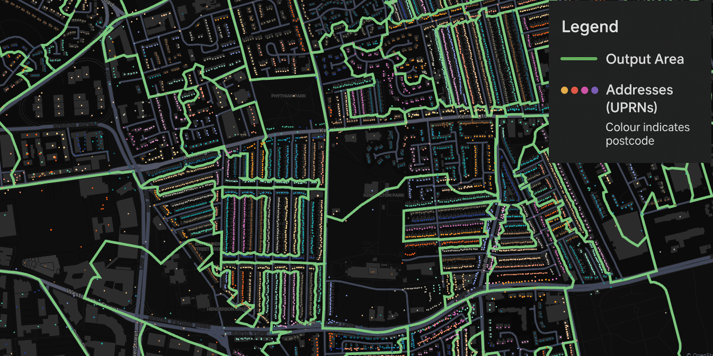

# !pip install pandas geopandas pyarrow scikit-learn clustergram umap-learn seaborn plotly matplotlib numpy keplergl openai
# from google.colab import output
# output.enable_custom_widget_manager()Creating Cutting-Edge Geodemographic Classifications from Scratch in Python
Workshop Content
This notebook contains the full workflow for producing a geodemographic classification from scratch in python using k-means clustering.
- Data Access and Processing:
- Access UK Census data and process using Pandas.
- Select a specific region of interest (e.g., Liverpool City Region, Greater Manchester, Greater London).
- Census Data Analysis and Variable selection:
- Select relevant Census variables for clustering.
- Standardise variables.
- Perform correlation & variance analysis to identify potentially redundant variables.
- Alternative variable selection methods (e.g., PCA, Autoencoders).
- Clustering:
- Determine optimal number of clusters using Clustergrams.
- Apply K-Means clustering to classify areas based on selected variables.
- Perform top-down hierarchical clustering to divide clusters into subgroups.
- Analytical Techniques:
- Use UMAP (Uniform Manifold Approximation and Projection) to visualise high-dimensional embeddings in 2D.
- Visualisation and Communication:
- Visualise clusters and subclusters using Kepler.gl for interactive mapping.
- Explore cluster characteristics using summary statistics and index scores.
- Export results to various formats (GeoPackage, Parquet) for use in GIS software.
- Cluster Naming with LLMs:
- Use Large Language Models (LLMs) to generate descriptive names and summaries for clusters based on their characteristics.
What are Geodemographics?
Geodemographics are a method of classifying geographic areas based on the characteristics of their populations. It involves grouping areas with similar demographic, socio-economic, and lifestyle attributes into distinct categories or clusters. These classifications help in understanding the spatial distribution of different population segments and are widely used in various fields such as marketing, urban planning, public health, and social research. For more information on geodemographics in the UK and the US see: (Alexander D. Singleton and Spielman 2014).
Singleton, Alexander D., and Seth E. Spielman. 2014. “The Past, Present, and Future of Geodemographic Research in the United States and United Kingdom.” The Professional Geographer 66 (4): 558–67. https://doi.org/10.1080/00330124.2013.848764.
Geodemographic classifications are typically created using statistical techniques such as cluster analysis, in particular k-means clustering. That is the method we will use in this workshop.
Running the Notebook yourself
The code used to generate this notebook is available on GitHub. Instructions for setting up the environment and downloading the data are provided in the README file.
Install Required Packages in Colab
If you are using Google Colab, you will need to install the required packages in the Colab environment. This also enables the custom widget manager required for Kepler.gl to work in Colab. You can do this by uncommenting and running the following code cell in the notebook:
Import the necessary libraries and packages.
import os
import pandas as pd
import numpy as np
import geopandas as gpd
from sklearn.cluster import KMeans
import umap.umap_ as umap
from clustergram import Clustergram
import openai
import matplotlib.pyplot as plt
from matplotlib import colors as mcolors
from keplergl import KeplerGl
import plotly.express as px
import seaborn as sns
import json
#set a random seed for reproducibility
random_seed = 507
#check that outputs directories exists (if not create it), this is important if you are running the notebook in colab
if not os.path.exists('outputs'):
os.makedirs('outputs')
if not os.path.exists('outputs/maps'):
os.makedirs('outputs/maps')
if not os.path.exists('outputs/plots'):
os.makedirs('outputs/plots')
if not os.path.exists('outputs/subclusters'):
os.makedirs('outputs/subclusters')Retrieving and Preparing Data
We will be using Census data from all four UK nations, which are available openly from the respective national statistics agencies (listed below). For this workshop, we will utilise a subset of Census variables that have been unified across the four nations. These variables were used to produce a UK-wide Output Area Classification (OAC) in 2021 (Wyszomierski et al. 2024). We will also need boundary data for the Output Areas (OAs). All the data required can be downloaded from the Geographic Data Service Website link, place the file input_data_1.zip in the same directory as the notebook and it will be unzipped below.
Wyszomierski, Jakub, Paul A. Longley, Alex D. Singleton, Christopher Gale, and Oliver O’Brien. 2024. “A Neighbourhood Output Area Classification from the 2021 and 2022 UK Censuses.” The Geographical Journal 190 (2): e12550. https://doi.org/10.1111/geoj.12550.
Original Data Sources:
- ONS Census 2021 (England & Wales):
- NRS Census 2022 (Scotland):
- NISRA Census 2021 (Northern Ireland):
- ONS Geoportal for boundaries and shapefiles, including clipped EW, Scotland, and Northern Ireland geographies.
#unzip the data if not already done
if not os.path.exists('input_data'):
import zipfile
with zipfile.ZipFile('input_data_1.zip', 'r') as zip_ref:
zip_ref.extractall('./')--------------------------------------------------------------------------- FileNotFoundError Traceback (most recent call last) Cell In[4], line 4 2 if not os.path.exists('input_data'): 3 import zipfile ----> 4 with zipfile.ZipFile('input_data_1.zip', 'r') as zip_ref: 5 zip_ref.extractall('./') File /usr/lib/python3.12/zipfile/__init__.py:1331, in ZipFile.__init__(self, file, mode, compression, allowZip64, compresslevel, strict_timestamps, metadata_encoding) 1329 while True: 1330 try: -> 1331 self.fp = io.open(file, filemode) 1332 except OSError: 1333 if filemode in modeDict: FileNotFoundError: [Errno 2] No such file or directory: 'input_data_1.zip'
#Load the census data
variable_df = pd.read_parquet("input_data/uk_census_data.parquet")
#round to 2 decimal places
variable_df = variable_df.round(2)
#look at the shape of the dataset
print(f"Input data shape: {variable_df.shape}")
#look at the first few rows of the dataset
variable_df.head()--------------------------------------------------------------------------- FileNotFoundError Traceback (most recent call last) Cell In[5], line 2 1 #Load the census data ----> 2 variable_df = pd.read_parquet("input_data/uk_census_data.parquet") 3 #round to 2 decimal places 4 variable_df = variable_df.round(2) File ~/projects/GeoDem_CartoWorkshop2025/.venv/lib/python3.12/site-packages/pandas/io/parquet.py:669, in read_parquet(path, engine, columns, storage_options, use_nullable_dtypes, dtype_backend, filesystem, filters, **kwargs) 666 use_nullable_dtypes = False 667 check_dtype_backend(dtype_backend) --> 669 return impl.read( 670 path, 671 columns=columns, 672 filters=filters, 673 storage_options=storage_options, 674 use_nullable_dtypes=use_nullable_dtypes, 675 dtype_backend=dtype_backend, 676 filesystem=filesystem, 677 **kwargs, 678 ) File ~/projects/GeoDem_CartoWorkshop2025/.venv/lib/python3.12/site-packages/pandas/io/parquet.py:258, in PyArrowImpl.read(self, path, columns, filters, use_nullable_dtypes, dtype_backend, storage_options, filesystem, **kwargs) 256 if manager == "array": 257 to_pandas_kwargs["split_blocks"] = True --> 258 path_or_handle, handles, filesystem = _get_path_or_handle( 259 path, 260 filesystem, 261 storage_options=storage_options, 262 mode="rb", 263 ) 264 try: 265 pa_table = self.api.parquet.read_table( 266 path_or_handle, 267 columns=columns, (...) 270 **kwargs, 271 ) File ~/projects/GeoDem_CartoWorkshop2025/.venv/lib/python3.12/site-packages/pandas/io/parquet.py:141, in _get_path_or_handle(path, fs, storage_options, mode, is_dir) 131 handles = None 132 if ( 133 not fs 134 and not is_dir (...) 139 # fsspec resources can also point to directories 140 # this branch is used for example when reading from non-fsspec URLs --> 141 handles = get_handle( 142 path_or_handle, mode, is_text=False, storage_options=storage_options 143 ) 144 fs = None 145 path_or_handle = handles.handle File ~/projects/GeoDem_CartoWorkshop2025/.venv/lib/python3.12/site-packages/pandas/io/common.py:882, in get_handle(path_or_buf, mode, encoding, compression, memory_map, is_text, errors, storage_options) 873 handle = open( 874 handle, 875 ioargs.mode, (...) 878 newline="", 879 ) 880 else: 881 # Binary mode --> 882 handle = open(handle, ioargs.mode) 883 handles.append(handle) 885 # Convert BytesIO or file objects passed with an encoding FileNotFoundError: [Errno 2] No such file or directory: 'input_data/uk_census_data.parquet'
Output Areas
Output Areas (OAs) (Martin 2002) (called data zones in northern ireland and small areas in Scotland) are the smallest geographical units available openly in the UK Census. They are designed to have similar population sizes and to maximize the internal social homogeneity of each unit. Each OA typically contains around 100-200 households. These are the base geographical units used in this classification.
Martin, David. 2002. “Geography for the 2001 Census in England and Wales.” Population Trends, no. 108: 7—15. http://europepmc.org/abstract/MED/12138615.

Spatial Standardisation
The data here has been normalised by the total population of each OA to give a percentage. This is important as OAs can vary in population size, and using raw counts would bias the clustering towards more populous areas. We also include the population density of each OA (population / area in sqkm) as a variable.
variable_df.head()--------------------------------------------------------------------------- NameError Traceback (most recent call last) Cell In[6], line 1 ----> 1 variable_df.head() NameError: name 'variable_df' is not defined
Short descriptions of the variables used in this example are found in the file census_variable_lookup.csv. The full variable descriptions can be found in the 2021 Census User Guide.
These variables have been selected to provide a broad overview of demographic, socio-economic, and housing characteristics. They cover aspects such as age distribution, household composition, housing type, housing tenure, employment status and education levels.
#load the lookup file which contains variable descriptions.
var_lookup = pd.read_csv("input_data/census_variable_lookup.csv")[["No.","Variable_Name","Domain"]]
var_lookup--------------------------------------------------------------------------- FileNotFoundError Traceback (most recent call last) Cell In[7], line 2 1 #load the lookup file which contains variable descriptions. ----> 2 var_lookup = pd.read_csv("input_data/census_variable_lookup.csv")[["No.","Variable_Name","Domain"]] 3 var_lookup File ~/projects/GeoDem_CartoWorkshop2025/.venv/lib/python3.12/site-packages/pandas/io/parsers/readers.py:1026, in read_csv(filepath_or_buffer, sep, delimiter, header, names, index_col, usecols, dtype, engine, converters, true_values, false_values, skipinitialspace, skiprows, skipfooter, nrows, na_values, keep_default_na, na_filter, verbose, skip_blank_lines, parse_dates, infer_datetime_format, keep_date_col, date_parser, date_format, dayfirst, cache_dates, iterator, chunksize, compression, thousands, decimal, lineterminator, quotechar, quoting, doublequote, escapechar, comment, encoding, encoding_errors, dialect, on_bad_lines, delim_whitespace, low_memory, memory_map, float_precision, storage_options, dtype_backend) 1013 kwds_defaults = _refine_defaults_read( 1014 dialect, 1015 delimiter, (...) 1022 dtype_backend=dtype_backend, 1023 ) 1024 kwds.update(kwds_defaults) -> 1026 return _read(filepath_or_buffer, kwds) File ~/projects/GeoDem_CartoWorkshop2025/.venv/lib/python3.12/site-packages/pandas/io/parsers/readers.py:620, in _read(filepath_or_buffer, kwds) 617 _validate_names(kwds.get("names", None)) 619 # Create the parser. --> 620 parser = TextFileReader(filepath_or_buffer, **kwds) 622 if chunksize or iterator: 623 return parser File ~/projects/GeoDem_CartoWorkshop2025/.venv/lib/python3.12/site-packages/pandas/io/parsers/readers.py:1620, in TextFileReader.__init__(self, f, engine, **kwds) 1617 self.options["has_index_names"] = kwds["has_index_names"] 1619 self.handles: IOHandles | None = None -> 1620 self._engine = self._make_engine(f, self.engine) File ~/projects/GeoDem_CartoWorkshop2025/.venv/lib/python3.12/site-packages/pandas/io/parsers/readers.py:1880, in TextFileReader._make_engine(self, f, engine) 1878 if "b" not in mode: 1879 mode += "b" -> 1880 self.handles = get_handle( 1881 f, 1882 mode, 1883 encoding=self.options.get("encoding", None), 1884 compression=self.options.get("compression", None), 1885 memory_map=self.options.get("memory_map", False), 1886 is_text=is_text, 1887 errors=self.options.get("encoding_errors", "strict"), 1888 storage_options=self.options.get("storage_options", None), 1889 ) 1890 assert self.handles is not None 1891 f = self.handles.handle File ~/projects/GeoDem_CartoWorkshop2025/.venv/lib/python3.12/site-packages/pandas/io/common.py:873, in get_handle(path_or_buf, mode, encoding, compression, memory_map, is_text, errors, storage_options) 868 elif isinstance(handle, str): 869 # Check whether the filename is to be opened in binary mode. 870 # Binary mode does not support 'encoding' and 'newline'. 871 if ioargs.encoding and "b" not in ioargs.mode: 872 # Encoding --> 873 handle = open( 874 handle, 875 ioargs.mode, 876 encoding=ioargs.encoding, 877 errors=errors, 878 newline="", 879 ) 880 else: 881 # Binary mode 882 handle = open(handle, ioargs.mode) FileNotFoundError: [Errno 2] No such file or directory: 'input_data/census_variable_lookup.csv'
Examine the Data
We can plot the distribution of all the variables to get a sense of their distributions. Many of the variables are highly skewed, which is common for Census data. Skewed variables can be problematic for geodemographics because they cause distance metrics to be dominated by extreme values so effect the quality of clustering.
# Use pandas histogram plotting function with seaborn aesthetics
sns.set_style("whitegrid")
nrows = int(np.ceil(len(variable_df.columns) / 3))
variable_df_withnames = variable_df.copy()
variable_df_withnames.columns = var_lookup['Variable_Name'].values[:58]
variable_df_withnames.hist(bins=30, figsize=(7.5, nrows*1.5), edgecolor='black', layout=(nrows, 3))
plt.tight_layout()
plt.show()--------------------------------------------------------------------------- NameError Traceback (most recent call last) Cell In[8], line 3 1 # Use pandas histogram plotting function with seaborn aesthetics 2 sns.set_style("whitegrid") ----> 3 nrows = int(np.ceil(len(variable_df.columns) / 3)) 5 variable_df_withnames = variable_df.copy() 6 variable_df_withnames.columns = var_lookup['Variable_Name'].values[:58] NameError: name 'variable_df' is not defined
Spatial Data
We will also need the Output Area boundaries to map the results. The file used here is a GeoPackage containing the 2021 Output Area boundaries for the whole of the UK, clipped to the extent of England and Wales, Scotland, and Northern Ireland. The file has been created by joining the original files for each nation downloaded from the ONS Geoportal.
#---------
# Import spatial data
#---------
OA_Boundaries = gpd.read_file("input_data/OA_2021_22_Boundaries.gpkg").set_index('OA')
#---------
# Load Local Authority District (LAD) for region selection
#---------
LAD_Boundaries = gpd.read_file("input_data/Local_Authority_Districts_December_2022_UK_BGC_V2_5759908710055972638.gpkg")--------------------------------------------------------------------------- DataSourceError Traceback (most recent call last) Cell In[9], line 4 1 #--------- 2 # Import spatial data 3 #--------- ----> 4 OA_Boundaries = gpd.read_file("input_data/OA_2021_22_Boundaries.gpkg").set_index('OA') 5 #--------- 6 # Load Local Authority District (LAD) for region selection 7 #--------- 8 LAD_Boundaries = gpd.read_file("input_data/Local_Authority_Districts_December_2022_UK_BGC_V2_5759908710055972638.gpkg") File ~/projects/GeoDem_CartoWorkshop2025/.venv/lib/python3.12/site-packages/geopandas/io/file.py:316, in _read_file(filename, bbox, mask, columns, rows, engine, **kwargs) 313 filename = response.read() 315 if engine == "pyogrio": --> 316 return _read_file_pyogrio( 317 filename, bbox=bbox, mask=mask, columns=columns, rows=rows, **kwargs 318 ) 320 elif engine == "fiona": 321 if pd.api.types.is_file_like(filename): File ~/projects/GeoDem_CartoWorkshop2025/.venv/lib/python3.12/site-packages/geopandas/io/file.py:576, in _read_file_pyogrio(path_or_bytes, bbox, mask, rows, **kwargs) 567 warnings.warn( 568 "The 'include_fields' and 'ignore_fields' keywords are deprecated, and " 569 "will be removed in a future release. You can use the 'columns' keyword " (...) 572 stacklevel=3, 573 ) 574 kwargs["columns"] = kwargs.pop("include_fields") --> 576 return pyogrio.read_dataframe(path_or_bytes, bbox=bbox, **kwargs) File ~/projects/GeoDem_CartoWorkshop2025/.venv/lib/python3.12/site-packages/pyogrio/geopandas.py:275, in read_dataframe(path_or_buffer, layer, encoding, columns, read_geometry, force_2d, skip_features, max_features, where, bbox, mask, fids, sql, sql_dialect, fid_as_index, use_arrow, on_invalid, arrow_to_pandas_kwargs, **kwargs) 270 if not use_arrow: 271 # For arrow, datetimes are read as is. 272 # For numpy IO, datetimes are read as string values to preserve timezone info 273 # as numpy does not directly support timezones. 274 kwargs["datetime_as_string"] = True --> 275 result = read_func( 276 path_or_buffer, 277 layer=layer, 278 encoding=encoding, 279 columns=columns, 280 read_geometry=read_geometry, 281 force_2d=gdal_force_2d, 282 skip_features=skip_features, 283 max_features=max_features, 284 where=where, 285 bbox=bbox, 286 mask=mask, 287 fids=fids, 288 sql=sql, 289 sql_dialect=sql_dialect, 290 return_fids=fid_as_index, 291 **kwargs, 292 ) 294 if use_arrow: 295 import pyarrow as pa File ~/projects/GeoDem_CartoWorkshop2025/.venv/lib/python3.12/site-packages/pyogrio/raw.py:198, in read(path_or_buffer, layer, encoding, columns, read_geometry, force_2d, skip_features, max_features, where, bbox, mask, fids, sql, sql_dialect, return_fids, datetime_as_string, **kwargs) 59 """Read OGR data source into numpy arrays. 60 61 IMPORTANT: non-linear geometry types (e.g., MultiSurface) are converted (...) 194 195 """ 196 dataset_kwargs = _preprocess_options_key_value(kwargs) if kwargs else {} --> 198 return ogr_read( 199 get_vsi_path_or_buffer(path_or_buffer), 200 layer=layer, 201 encoding=encoding, 202 columns=columns, 203 read_geometry=read_geometry, 204 force_2d=force_2d, 205 skip_features=skip_features, 206 max_features=max_features or 0, 207 where=where, 208 bbox=bbox, 209 mask=_mask_to_wkb(mask), 210 fids=fids, 211 sql=sql, 212 sql_dialect=sql_dialect, 213 return_fids=return_fids, 214 dataset_kwargs=dataset_kwargs, 215 datetime_as_string=datetime_as_string, 216 ) File pyogrio/_io.pyx:1313, in pyogrio._io.ogr_read() File pyogrio/_io.pyx:232, in pyogrio._io.ogr_open() DataSourceError: input_data/OA_2021_22_Boundaries.gpkg: No such file or directory
Selecting a Region
For this workshop, we will focus on a specific region of the UK to keep the analysis manageable.
Focusing on a specific region allows us to create a more detailed and relevant geodemographic classification for that area, capturing local nuances and characteristics that may be lost in a broader national classification. For example, a London specific OAC was developed as London has a drastically different demographic composition to the rest of the United Kingdom (Alex D. Singleton and Longley 2024).
Singleton, Alex D., and Paul A. Longley. 2024. “Classifying and Mapping Residential Structure Through the London Output Area Classification.” EPB: Urban Analytics and City Science 51 (5): 1153–64. https://doi.org/10.1177/23998083241242913.
By default we will use the Output Areas within the Liverpool City Region covering the city of liverpool and its surrounding areas. This region is prodominently urban and has a diverse population, making it an interesting case study for geodemographic classification. If running this notebook on your own machine, you can change the region of study from the selection below.
# region definitions (LAD22CD codes)
region_lads = {
"Greater Manchester": [
"E08000001","E08000002","E08000003","E08000004","E08000005",
"E08000006","E08000007","E08000008","E08000009","E08000010"
],
"Liverpool City Region": [
"E06000006","E08000011","E08000012","E08000013","E08000014",
"E08000015"
],
"Greater London": [
"E09000001","E09000002","E09000003","E09000004","E09000005",
"E09000006","E09000007","E09000008","E09000009","E09000010",
"E09000011","E09000012","E09000013","E09000014","E09000015",
"E09000016","E09000017","E09000018","E09000019","E09000020",
"E09000021","E09000022","E09000023","E09000024","E09000025",
"E09000026","E09000027","E09000028","E09000029","E09000030",
"E09000031","E09000032","E09000033"
],
"Scotland": [
"S12000005","S12000006","S12000008","S12000010","S12000011",
"S12000013","S12000014","S12000017","S12000018","S12000019",
"S12000020","S12000021","S12000023","S12000026","S12000027",
"S12000028","S12000029","S12000030","S12000033","S12000034",
"S12000035","S12000036","S12000038","S12000039","S12000040",
"S12000041","S12000042","S12000045","S12000047","S12000048",
"S12000049","S12000050"
],
"Northern Ireland": [
"N09000001","N09000002","N09000003","N09000004","N09000005",
"N09000006","N09000007","N09000008","N09000009","N09000010",
"N09000011"
],
"Wales": [
"W06000001","W06000002","W06000003","W06000004","W06000005",
"W06000006","W06000007","W06000008","W06000009","W06000010",
"W06000011","W06000012","W06000013","W06000014","W06000015",
"W06000016","W06000017","W06000018","W06000019","W06000020",
"W06000021","W06000022","W06000023","W06000024"
],
}Selecting the region of interest:
#Choose region from the list above by uncommenting the relevant line
lad_codes = region_lads["Liverpool City Region"]
# #or eg:
# lad_codes = region_lads["Greater Manchester"]
selected_lads = LAD_Boundaries[LAD_Boundaries["LAD22CD"].isin(lad_codes)]
# Spatial join to filter only intersecting OAs
oas_region = gpd.sjoin(OA_Boundaries, selected_lads[["geometry"]], predicate="intersects").drop(columns=["index_right"])
# drop duplicates (one which intersect with two LADs) using index
oas_region = oas_region[~oas_region.index.duplicated(keep='first')]
# --- Merge OA polygons with your variable data keeping only those with matching OAs in the region
oas_region_vars = oas_region.join(variable_df, how="inner")
# #keep only OAs in our region
variable_df_region=variable_df.loc[variable_df.index.isin(oas_region.index)]--------------------------------------------------------------------------- NameError Traceback (most recent call last) Cell In[12], line 1 ----> 1 selected_lads = LAD_Boundaries[LAD_Boundaries["LAD22CD"].isin(lad_codes)] 3 # Spatial join to filter only intersecting OAs 4 oas_region = gpd.sjoin(OA_Boundaries, selected_lads[["geometry"]], predicate="intersects").drop(columns=["index_right"]) NameError: name 'LAD_Boundaries' is not defined
Map the Area
We will use Kepler.gl to visualise the Output Areas in our selected region. Kepler.gl is an open-source geospatial analysis tool that allows for interactive mapping and visualisation of large datasets.
#code to enable kepler in colab
from IPython.display import Javascript
display(Javascript('''
google.colab.widgets.installCustomManager('https://ssl.gstatic.com/colaboratory-static/widgets/colab-cdn-widget-manager/6a14374f468a145a/manager.min.js');
'''))
# --- Calculate region centroid for map centering ---
from shapely.ops import unary_union
region_geom = unary_union(
LAD_Boundaries.loc[LAD_Boundaries["LAD22CD"].isin(lad_codes), "geometry"]
)
region_centroid = region_geom.centroid
centroid_ll = gpd.GeoSeries([region_centroid], crs=LAD_Boundaries.crs).to_crs(epsg=4326).iloc[0]
centroid_lat, centroid_lon = centroid_ll.y, centroid_ll.x
# --- Quick Kepler map ---
area_map_ = KeplerGl(
height=600,
config={
"version": "v1",
"config": {
"mapState": {
'latitude': centroid_lat,
'longitude': centroid_lon,
"zoom": 9,
"pitch": 0,
"bearing": 0
}
}
}
)
# Add your layer
area_map_.add_data(data=oas_region_vars.reset_index(), name="OAs in Region")
# If you want to export to a standalone HTML:
area_map_.save_to_html(file_name="outputs/maps/region_oas_map.html")
# Show inside Jupyter
display(area_map_)Transform and Standardise Variables
Before applying clustering algorithms, it is important to transform and standardise the data to ensure that all variables contribute equally to the analysis.
The function below applies two transformations to a dataframe (applied column-wise):
- Inverse Hyperbolic Sine (IHS) transform
- Min–Max scaling to [0, 1]
Mathematical definitions
Inverse hyperbolic sine (IHS, a.k.a. arcsinh):
- Similar to a log transform but works with zero and negative values.
- Helps stabilise variance and make skewed distributions more normal-like.
\[ \mathrm{arcsinh}(x) = \ln\!\big(x + \sqrt{x^{2}+1}\big) \]
Properties: - For large (|x|):
\[
\mathrm{arcsinh}(x) \approx \ln(2|x|)
\] (behaves like log).
- Near (0):
\[ \mathrm{arcsinh}(x) \approx x \]
Min–Max scaling (applied per column after IHS):
\[ x' = \frac{x - \min(x)}{\max(x) - \min(x)} \]
- Rescales all values into the range ([0, 1]).
- Useful for comparing variables with different units/scales.
def transform_and_standardise_data(df):
"""Apply inverse hyperbolic sine transform, to account for non-normality
and then range standardise using min-max scaling to the dataframe."""
df = np.arcsinh(df)
denom = df.max() - df.min()
df = (df - df.min()) / denom.replace(0, 1) # prevent divide-by-zero
return df
# Transform the input data
transformed_variable_df = transform_and_standardise_data(variable_df_region)--------------------------------------------------------------------------- NameError Traceback (most recent call last) Cell In[14], line 10 7 return df 9 # Transform the input data ---> 10 transformed_variable_df = transform_and_standardise_data(variable_df_region) NameError: name 'variable_df_region' is not defined
Variable Selection
In geodemographics, variable selection is crucial to turn large datasets (like the UK Census) with 100s of variables into meaningful clusters.
The nature of clustering means the high-dimensional space can be sparse and noisy, so reducing the number of variables helps improve cluster quality and interpretability.
Key points:
- Intention – variables depend on the purpose of the geodem (e.g. retail vs. health).
- Correlation – drop highly correlated variables to avoid redundancy.
- Variance – keep variables that vary across places (so they can distinguish areas).
- Expert choice – ensure selected variables are socially meaningful.
Here we are using a broad, pre-selected dataset which was used for the UK OAC 2021 classification. So we expect the variables to be broadly suitable for our region of interest.
New methods include:
- Automated variable selection (Liu, Singleton, and Arribas‐Bel 2019) – uses statistical procedure to determine a subset of variables which produce the best clustering results.
- Autoencoders – Use neural networks to compress all variables into a smaller set of features, while preserving the most important patterns.
Liu, Yunzhe, Alex Singleton, and Daniel Arribas‐Bel. 2019. “A Principal Component Analysis (PCA)‐based Framework for Automated Variable Selection in Geodemographic Classification.” Geo‐spatial Information Science 22 (4): 251–64. https://doi.org/10.1080/10095020.2019.1621549.
Correlation & Variance Analysis
transformed_variable_df_withnames = transformed_variable_df.copy()
transformed_variable_df_withnames.columns = [var_lookup.set_index("No.")["Variable_Name"].to_dict().get(col, col) for col in transformed_variable_df.columns]
# --- Correlation Check ---
corr_matrix = transformed_variable_df_withnames.corr()
# --- Interactive heatmap with Plotly ---
fig = px.imshow(
corr_matrix.values,
color_continuous_scale="RdBu_r",
zmin=-1, zmax=1,
title="Correlation Heatmap",
x=corr_matrix.columns,
y=corr_matrix.columns,
)
# Add hover names for tooltips
fig.update_traces(
hovertemplate="<b>%{x}</b> vs <b>%{y}</b><br>Correlation: %{z:.3f}<extra></extra>",
)
# Hide x/y tick labels but keep tooltips
fig.update_xaxes(showticklabels=False)
fig.update_yaxes(showticklabels=False)
fig.update_layout(
width=700,
height=700,
coloraxis_colorbar=dict(len=0.8, thickness=15),
margin=dict(l=40, r=40, t=60, b=40)
)
fig.show()
# --- Find highly correlated pairs (print each pair twice) ---
cols = corr_matrix.columns
# consider only upper triangle to get unique unordered pairs (i < j)
upper_mask = np.triu(np.ones(corr_matrix.shape, dtype=bool), k=1)
# build mask for correlations above 0.95 (and exclude perfect 1.0)
corr_threshold = 0.95
corr_vals = corr_matrix.values
# consider only upper triangle unique pairs (i < j) and print each once once
mask = ((corr_vals > corr_threshold) & upper_mask)
pairs = np.column_stack(np.where(mask))
for i, j in pairs:
col_i, col_j = cols[i], cols[j]
val = corr_matrix.iat[i, j]
print(f"High correlation between {col_i} and {col_j}: {val:.3f}")
# --- Variance Check ---
variances = transformed_variable_df_withnames.var()
#plot the variances
plt.figure(figsize=(8, 5))
variances.sort_values().plot(kind='bar')
plt.ylabel('Variance')
plt.title('Variance of Each Variable')
plt.show()--------------------------------------------------------------------------- NameError Traceback (most recent call last) Cell In[15], line 1 ----> 1 transformed_variable_df_withnames = transformed_variable_df.copy() 2 transformed_variable_df_withnames.columns = [var_lookup.set_index("No.")["Variable_Name"].to_dict().get(col, col) for col in transformed_variable_df.columns] 4 # --- Correlation Check --- NameError: name 'transformed_variable_df' is not defined
Selecting Variables
If we want to remove any variables we can do so here. This could be based on the analysis above or to tailor the classification to a specific purpose.
drop_vars = []# No variables to drop, use variable selection as is.
# for northern ireland bangladeshi ethnicity variable should be removed as variation is zero (no counts)
# drop_vars = ['v12']
cleaned_variable_df = transformed_variable_df.drop(columns=drop_vars)
# We could also focus on a specific theme, for example education and work
# related variables only:
# ed_work_vars = ['v45','v46','v47','v48','v49','v50','v51','v52','v53',
# 'v54','v55','v56', 'v57','v58','v59','v60']
# cleaned_variable_df = transformed_variable_df[ed_work_vars]--------------------------------------------------------------------------- NameError Traceback (most recent call last) Cell In[16], line 5 1 drop_vars = []# No variables to drop, use variable selection as is. 2 # for northern ireland bangladeshi ethnicity variable should be removed as variation is zero (no counts) 3 # drop_vars = ['v12'] ----> 5 cleaned_variable_df = transformed_variable_df.drop(columns=drop_vars) 7 # We could also focus on a specific theme, for example education and work 8 # related variables only: 9 # ed_work_vars = ['v45','v46','v47','v48','v49','v50','v51','v52','v53', 10 # 'v54','v55','v56', 'v57','v58','v59','v60'] 11 # cleaned_variable_df = transformed_variable_df[ed_work_vars] NameError: name 'transformed_variable_df' is not defined
K-Means Clustering
K-means clustering is the most commonly used clustering algorithm for geodemographic classification. It partitions a dataset into k groups (clusters), where each observation belongs to the cluster with the nearest mean (centroid). The algorithm iteratively updates cluster assignments and centroids until convergence.
How it works (simplified):
- Choose the number of clusters (k).
- Initialise k centroids (usually at random points in the data space).
- Assign each data point to the nearest centroid.
- Update centroids as the mean of the points in each cluster.
- Repeat steps 3–4 until assignments no longer change (or improvement is below a threshold).
Strengths:
- Simple and computationally efficient.
- Works well when clusters are roughly spherical and similar in size.
Limitations:
- Requires specifying k in advance.
- Sensitive to outliers and scaling of features.
- Assumes clusters are convex1 and isotropic2; k‑means effectively assumes clusters are roughly spherical with similar variance in every direction, which may not hold in real data.
- Dimensionality: K-means can struggle in very high-dimensional spaces due to the “curse of dimensionality”
1 A set is convex if, for any two points in the set, the straight line between them lies entirely within the set.
2 Having uniform properties in all directions
More details and examples can be found here: Scikit-learn: K-Means
Choosing the Number of Clusters (k) - Clustergrams
When using k-means clustering, one of the key decisions is selecting the optimal number of clusters (k). This choice can significantly impact the quality and interpretability of the resulting geodemographic classification. Key considerations when choosing k:
- Each cluster be as homogeneous as possible.
- Each cluster should be as distinct from the others as possible.
- The clusters should be as evenly sized as possible.
Clustergrams (Fleischmann 2023) are visualisation technique that shows how cluster assignments change as you increase the number of clusters (k). This helps you to understand the structure in very high-dimensional space in the following ways:
Fleischmann, Martin. 2023. “Clustergram: Visualization and Diagnostics for Cluster Analysis.” Journal of Open Source Software 8 (89): 5240. https://doi.org/10.21105/joss.05240.
- Cluster separation: Helps you to determine the right number of clusters by visualising how cleanly clusters separate
- Cluster stability: Shows which clusters persist across different k values (stable long lines) vs. those which are artifacts of over-clustering (short, erratic lines)
- Split patterns: Reveals the natural hierarchy in the data by showing how clusters subdivide
Further guidance on interpreting clustergrams and choosing the number of clusters can be found here: Clustergram
# Since k-means is sensitive to initialization, `n_init` determines the number of
# times the algorithm runs with different centroid seeds. The final result is the
# best outcome based on inertia/WCSS (within-cluster sum of squares).
n_init = 100 # Use a low value for quick testing, increase (~100) for final results
cgram = Clustergram(range(1, 10), n_init=n_init, random_state=random_seed,verbose=False) # Initialize clustergram model
cgram.fit(cleaned_variable_df) # Fit model to data
cgram.plot() # Generate plot
plt.savefig("outputs/plots/supergroup_clustergram.png") # Save figure
plt.show() # Display plot--------------------------------------------------------------------------- NameError Traceback (most recent call last) Cell In[17], line 6 4 n_init = 100 # Use a low value for quick testing, increase (~100) for final results 5 cgram = Clustergram(range(1, 10), n_init=n_init, random_state=random_seed,verbose=False) # Initialize clustergram model ----> 6 cgram.fit(cleaned_variable_df) # Fit model to data 7 cgram.plot() # Generate plot 8 plt.savefig("outputs/plots/supergroup_clustergram.png") # Save figure NameError: name 'cleaned_variable_df' is not defined
Choose the number of clusters (k) based on the clustergram above.
# Define the number of clusters (K). Choose K based on the clustergram plot.
num_clusters = 5Apply K-Means Clustering
# num_clusters (int): The number of clusters (K) to create.
# n_init (int): Number of times the K-means algorithm runs with different initial
# centroid seeds. The best result based on inertia/WCSS is chosen.
# A higher value (e.g., ~1000) is recommended for final results,
# but a lower value can be used for testing.
n_init = 1000 # Use a low value for quick testing, increase (~100) for final results
output_filepath = "outputs/supergroups_clusteroutput.csv"
# Initialize the K-means model
kmeans_model = KMeans(n_clusters=num_clusters,init="random", random_state=random_seed, n_init=n_init)
# Fit the model and assign clusters to a new dataframe which is a copy of the input data
supergrouped_variable_df = cleaned_variable_df.copy()
supergrouped_variable_df['cluster'] = kmeans_model.fit_predict(cleaned_variable_df)
# Ensure output directory exists
os.makedirs(os.path.dirname(output_filepath), exist_ok=True)
# Save the cluster assignments to a CSV file
supergrouped_variable_df[['cluster']].to_csv(output_filepath)
# Map numeric labels to letters
label_map = {i: chr(65 + i) for i in range(num_clusters)} # 0->A, 1->B, etc.
supergrouped_variable_df['cluster'] = supergrouped_variable_df['cluster'].map(label_map)
#view the output
supergrouped_variable_df["cluster"]--------------------------------------------------------------------------- NameError Traceback (most recent call last) Cell In[19], line 13 11 kmeans_model = KMeans(n_clusters=num_clusters,init="random", random_state=random_seed, n_init=n_init) 12 # Fit the model and assign clusters to a new dataframe which is a copy of the input data ---> 13 supergrouped_variable_df = cleaned_variable_df.copy() 14 supergrouped_variable_df['cluster'] = kmeans_model.fit_predict(cleaned_variable_df) 15 # Ensure output directory exists NameError: name 'cleaned_variable_df' is not defined
Mapping the Clusters
We can visualise the clusters on a map to see their spatial distribution.
UMAP Visualisation
We can use UMAP (Uniform Manifold Approximation and Projection) (McInnes, Healy, and Melville 2020) to visualise the high-dimensional Census data in 2D. UMAP is a dimensionality reduction technique that preserves both local and global structure in the data, making it well-suited for visualising complex datasets like Census data.
McInnes, Leland, John Healy, and James Melville. 2020. “UMAP: Uniform Manifold Approximation and Projection for Dimension Reduction.” https://arxiv.org/abs/1802.03426.
# Features = all columns except the cluster label
features = [c for c in supergrouped_variable_df.columns if c != 'cluster']
# Extract features and labels (transformed)
X = supergrouped_variable_df[features].values
labels = supergrouped_variable_df['cluster'].values
# Fit UMAP
# Apply UMAP to reduce 64 dimensions to 2D
reducer = umap.UMAP(
n_neighbors=30, # Numbers of neighbours
min_dist=0.0, # Allow points to be closer together
n_components=2, # Reduce to 2D for visualsation
random_state=508, # For reproducible results
metric='cosine', # Cosine similarity
init='random', # Use random initialisation
n_epochs=500, # More epochs for better convergence
spread=1.0, # Controls how tightly points are packed
verbose=False # Show progress
)
embedding = reducer.fit_transform(X)
umap_results = pd.DataFrame({
'UMAP1': embedding[:, 0],
'UMAP2': embedding[:, 1],
'Cluster': labels
})
# Save the UMAP results
umap_results.to_parquet('outputs/umap_results.parquet', index=False)--------------------------------------------------------------------------- NameError Traceback (most recent call last) Cell In[21], line 2 1 # Features = all columns except the cluster label ----> 2 features = [c for c in supergrouped_variable_df.columns if c != 'cluster'] 3 # Extract features and labels (transformed) 4 X = supergrouped_variable_df[features].values NameError: name 'supergrouped_variable_df' is not defined
# Define colours for each cluster - same as earlier map
colours = {
"A": '#8dd3c7',
"B": '#ffffb3',
"C": '#bebada',
"D": '#fb8072',
"E": '#fdb462',
"F": "#235477",
"G": '#fccde5',
"H": '#d9d9d9',
"I": '#bc80bd',
"J": '#ccebc5'
}
# Create interactive UMAP scatter plot
fig_interactive = px.scatter(
umap_results,
x='UMAP1',
y='UMAP2',
color='Cluster',
category_orders={"Cluster": sorted(umap_results["Cluster"].unique())}, #
color_discrete_map=colours,
)
# Style tweaks
fig_interactive.update_traces(marker=dict(size=3, opacity=0.7))
fig_interactive.update_layout(
title="UMAP Projection of Clusters",
xaxis_title="UMAP 1",
yaxis_title="UMAP 2",
legend_title="Cluster"
)
#save to html
fig_interactive.write_html("outputs/umap_interactive.html")
# fig_interactive.update_layout(width=800, height=600)
fig_interactive.show(config={"responsive": False})--------------------------------------------------------------------------- NameError Traceback (most recent call last) Cell In[22], line 17 2 colours = { 3 "A": '#8dd3c7', 4 "B": '#ffffb3', (...) 12 "J": '#ccebc5' 13 } 15 # Create interactive UMAP scatter plot 16 fig_interactive = px.scatter( ---> 17 umap_results, 18 x='UMAP1', 19 y='UMAP2', 20 color='Cluster', 21 category_orders={"Cluster": sorted(umap_results["Cluster"].unique())}, # 22 color_discrete_map=colours, 23 ) 25 # Style tweaks 26 fig_interactive.update_traces(marker=dict(size=3, opacity=0.7)) NameError: name 'umap_results' is not defined
The UMAP projection shows there is reasonable separation between the clusters, indicating that the k-means clustering has identified distinct groups in the data. In particular the small cluster in the bottom left which represents the city centre in our case study of Liverpool, is well-defined and separated from other clusters.
There are indications of further structure within clusters, which could be explored further using hierarchical clustering to subdivide clusters into subclusters. More on that in a bit.. for now lets dig into the clusters that we’ve got.
Cluster Profiling, Naming, and Describing using Language Models
We can explore the characteristics of each cluster using summary statistics and index scores. This helps us understand each cluster.
Cluster Statistics
#Lot at the characteristics of each cluster
# Read in the data
pop_size = pd.read_csv("input_data/oa_pop_data.csv")
pop_size = pop_size.set_index('OA')
#rename column to "population"
pop_size = pop_size.rename(columns={'uk001001': 'population'})
pop_size = pop_size['population']
#basic statistics of each cluster, number (perc of OAs) in each cluster and population
#number of OAs in each cluster
cluster_counts = supergrouped_variable_df['cluster'].value_counts().sort_index()
#percentage of OAs in each cluster
cluster_perc = (cluster_counts / cluster_counts.sum() * 100).round(2)
#join pop_size to supergrouped_variable_df on index
supergrouped_variable_df_withpop = supergrouped_variable_df.join(pop_size, how='left')
#pop in each cluster
cluster_pop = supergrouped_variable_df_withpop.groupby('cluster')['population'].sum()
#percentage of pop in each cluster
cluster_pop_perc = (cluster_pop / cluster_pop.sum() * 100).round(2)
#combine into a dataframe
cluster_summary = pd.DataFrame({
'Number of OAs': cluster_counts,
'Percentage of OAs': cluster_perc,
'Population': cluster_pop,
'Percentage of Population': cluster_pop_perc
})
cluster_summary--------------------------------------------------------------------------- FileNotFoundError Traceback (most recent call last) Cell In[23], line 4 1 #Lot at the characteristics of each cluster 2 3 # Read in the data ----> 4 pop_size = pd.read_csv("input_data/oa_pop_data.csv") 5 pop_size = pop_size.set_index('OA') 6 #rename column to "population" File ~/projects/GeoDem_CartoWorkshop2025/.venv/lib/python3.12/site-packages/pandas/io/parsers/readers.py:1026, in read_csv(filepath_or_buffer, sep, delimiter, header, names, index_col, usecols, dtype, engine, converters, true_values, false_values, skipinitialspace, skiprows, skipfooter, nrows, na_values, keep_default_na, na_filter, verbose, skip_blank_lines, parse_dates, infer_datetime_format, keep_date_col, date_parser, date_format, dayfirst, cache_dates, iterator, chunksize, compression, thousands, decimal, lineterminator, quotechar, quoting, doublequote, escapechar, comment, encoding, encoding_errors, dialect, on_bad_lines, delim_whitespace, low_memory, memory_map, float_precision, storage_options, dtype_backend) 1013 kwds_defaults = _refine_defaults_read( 1014 dialect, 1015 delimiter, (...) 1022 dtype_backend=dtype_backend, 1023 ) 1024 kwds.update(kwds_defaults) -> 1026 return _read(filepath_or_buffer, kwds) File ~/projects/GeoDem_CartoWorkshop2025/.venv/lib/python3.12/site-packages/pandas/io/parsers/readers.py:620, in _read(filepath_or_buffer, kwds) 617 _validate_names(kwds.get("names", None)) 619 # Create the parser. --> 620 parser = TextFileReader(filepath_or_buffer, **kwds) 622 if chunksize or iterator: 623 return parser File ~/projects/GeoDem_CartoWorkshop2025/.venv/lib/python3.12/site-packages/pandas/io/parsers/readers.py:1620, in TextFileReader.__init__(self, f, engine, **kwds) 1617 self.options["has_index_names"] = kwds["has_index_names"] 1619 self.handles: IOHandles | None = None -> 1620 self._engine = self._make_engine(f, self.engine) File ~/projects/GeoDem_CartoWorkshop2025/.venv/lib/python3.12/site-packages/pandas/io/parsers/readers.py:1880, in TextFileReader._make_engine(self, f, engine) 1878 if "b" not in mode: 1879 mode += "b" -> 1880 self.handles = get_handle( 1881 f, 1882 mode, 1883 encoding=self.options.get("encoding", None), 1884 compression=self.options.get("compression", None), 1885 memory_map=self.options.get("memory_map", False), 1886 is_text=is_text, 1887 errors=self.options.get("encoding_errors", "strict"), 1888 storage_options=self.options.get("storage_options", None), 1889 ) 1890 assert self.handles is not None 1891 f = self.handles.handle File ~/projects/GeoDem_CartoWorkshop2025/.venv/lib/python3.12/site-packages/pandas/io/common.py:873, in get_handle(path_or_buf, mode, encoding, compression, memory_map, is_text, errors, storage_options) 868 elif isinstance(handle, str): 869 # Check whether the filename is to be opened in binary mode. 870 # Binary mode does not support 'encoding' and 'newline'. 871 if ioargs.encoding and "b" not in ioargs.mode: 872 # Encoding --> 873 handle = open( 874 handle, 875 ioargs.mode, 876 encoding=ioargs.encoding, 877 errors=errors, 878 newline="", 879 ) 880 else: 881 # Binary mode 882 handle = open(handle, ioargs.mode) FileNotFoundError: [Errno 2] No such file or directory: 'input_data/oa_pop_data.csv'
Cluster Profiling
Index scores are a way to summarise how a particular variable behaves within a cluster compared to the overall average. They help identify which characteristics are over- or under-represented in each cluster.
Index scores are calculated as follows:
\[ \text{Index Score} = \left( \frac{\text{Mean of Variable in Cluster}}{\text{Overall Mean of Variable}} \right) \times 100 \]
Where:
- Mean of Variable in Cluster: the average value of the variable for all areas within the specific cluster.
- Overall Mean of Variable: the average value of the variable across all areas in the dataset.
Here we will look only at variables used in the clustering. It can also be useful to look at variables not used in the clustering or from other data sources to help understand the clusters.
# map encoding -> human name
encoding_to_name = dict(zip(var_lookup["No."], var_lookup["Variable_Name"]))
features = [c for c in supergrouped_variable_df.columns if c != 'cluster']
#dont average the cluster column
cluster_means = supergrouped_variable_df.groupby('cluster').mean()
global_means = supergrouped_variable_df[features].mean()
# --- Calculate percentage difference ---
pct_diff = (cluster_means / global_means) * 100
#drop columns with nan
pct_diff = pct_diff.dropna(axis=1, how='any')
# Transpose for easier plotting (rows: encodings, columns: clusters)
pct_display_df = pct_diff.T
# build human names for hover
human_names = pct_display_df.index.map(lambda e: encoding_to_name.get(e)).values
customdata_pct = np.tile(human_names.reshape(-1, 1), (1, pct_display_df.shape[1]))
# --- Heatmap (percentage difference) ---
fig_pct = px.imshow(
pct_display_df,
color_continuous_scale="RdYlGn",
origin="lower",
aspect="auto",
labels=dict(x="Cluster", y="Feature (encoding)", color="% of global mean"),
zmin=0,
zmax=200
)
# attach customdata and set hover
fig_pct.data[0].customdata = customdata_pct
fig_pct.update_traces(
hovertemplate="Cluster: %{x}<br>Encoding: %{y}<br>Name: %{customdata}<br>% of Global Mean: %{z:.1f}%<extra></extra>",
zmid=100 # centre colours on 100%
)
fig_pct.update_layout(
title="Cluster Profiles (% of Global Mean)",
xaxis_title="Cluster",
yaxis_title="Feature (encoding)",
height=800
)
fig_pct.show()--------------------------------------------------------------------------- NameError Traceback (most recent call last) Cell In[24], line 2 1 # map encoding -> human name ----> 2 encoding_to_name = dict(zip(var_lookup["No."], var_lookup["Variable_Name"])) 4 features = [c for c in supergrouped_variable_df.columns if c != 'cluster'] 5 #dont average the cluster column NameError: name 'var_lookup' is not defined
LLM Cluster Naming (and description)
To create a useful geodemographic classification, we need to assign meaningful names and descriptions to each cluster. This helps in interpreting the clusters and communicating their characteristics effectively.
Traditionally, this is done manually by examining the statistical profiles of each cluster and using domain knowledge to assign names. It is a time consuming process. However, we can leverage Large Language Models (LLMs) to assist in this process.
We have demonstrated that LLMs can be used to generate initial name and description suggestions based on the statistical profiles of each cluster (Alex D. Singleton and Spielman 2024). We can use LLMs to generate initial name and description suggestions based on the statistical profiles of each cluster. Here only the variables used in the clustering are included. It can also be useful to include other variables or external data to provide more context for the LLM.
Singleton, Alex D., and Seth Spielman. 2024. “Segmentation Using Large Language Models: A New Typology of American Neighborhoods.” EPJ Data Science 13 (34). https://doi.org/10.1140/epjds/s13688-024-00466-1.
Using the OpenAI API
Below I use the OpenAI API, if you have an API key insert it in an .env file3 as OPENAI_API_KEY=“sk….sA”
3 .env files are files that contain environment variables, they can be created as a plain text file (named .env) in the root directory. These files often contain private information so should not be commited to git
If you do have an API key skip the next cell and go to the cell where we will use a browser prompt to get the cluster names and descriptions.
from dotenv import load_dotenv
load_dotenv() # this loads variables from .env into environment
#get your OpenAI API key from environment variable
openai_api_key = os.getenv("OPENAI_API_KEY")
if not openai_api_key:
raise ValueError("Please set the OPENAI_API_KEY environment variable.")
client = openai.OpenAI(api_key=openai_api_key)
# -------------------------
# JSON Schema for output
# -------------------------
cluster_schema = {
"type": "object",
"properties": {
"name": {"type": "string"},
"description": {"type": "string"},
},
"required": ["name", "description"],
"additionalProperties": False,
}
system_prompt = """You are a geodemographic analyst.
Your task is to produce commercial-style geodemographic cluster pen portraits
and cluster names."""
user_prompt = """
A geodemographics company is trying to explain the characteristics
of several neighborhoods to a new customer. They present data comparing each
neighborhood to the region average. A score of 100 means the neighborhood
is equivalent to the regional average, 150 means one and a half times,
200 means twice, 50 means half, and 300 means three times the regional average.
Write a pen portrait for the neighborhood based on the data provided.
The description of each neighborhood should focus on characteristics with
scores above 120 or below 80. Write in the third person, no more than 500 words.
Do not mention the specific scores.
Instead, describe patterns relative to the regional average (above/below).
In the style of a commercial geodemographic classification,
create a cluster name that summarises the pen portrait.
The name should capture as many different characteristics as possible
and be no more than 3 words.
"""
# -------------------------
# Loop through clusters
# -------------------------
cluster_summaries = {}
for cluster in pct_diff.index:
cluster_pct = pct_diff.loc[cluster]
cluster_data = {
"cluster": cluster,
"data": {
encoding_to_name.get(feature): round(value, 1)
for feature, value in cluster_pct.items()
},
}
response = client.responses.create(
model="gpt-5-mini",
input=[
{"role": "system", "content": system_prompt.strip()},
{"role": "user", "content": user_prompt.strip()},
{"role": "user", "content": json.dumps(cluster_data)},
],
text={
"format": {
"type": "json_schema",
"name": "cluster_summary",
"schema": cluster_schema,
"strict": True,
}
},
)
cluster_summary = json.loads(response.output_text)
# store under your cluster ID
cluster_summaries[cluster] = cluster_summary
cluster_summariesPrompt for Browser Based LLM
The follow code cell generates a prompt for to be used in an LLM of your choice. Try it in your browser based LLM of choice (e.g. chatGPT, Claude, Gemini, etc)
The prompt should insure that the LLM produses the output in the correct format but this cannot be guaranteed.
#print the prompt to copy and paste into a LLM to generate cluster descriptions
prompt_intial = """
A geodemographics company is trying to explain the characteristics of several neighbourhoods to a new customer.
They present data comparing each neighbourhood to the region average.
A score of 100 means the neighbourhood is equivalent to the national average,
a score of 150 means the neighbourhood is one and a half times the national average,
a score of 200 means the neighbourhood is twice the national average,
a score of 50 means the neighbourhood is half of the region average,
a score of 300 means the neighbourhood is three times the region average.
Each neighbourhood has the following characteristics, described in #DATA# below.
Data are presented for each characteristic followed by a colon, and then a score.
The description of each neighbourhood should focus on characteristics that have scores which are greater than 120 or less than 80.
Write a separate description for each cluster (Cluster A, Cluster B, Cluster C, Cluster D, etc.
Each description should be written in the third person, in no more than 500 words. Do not mention the specific scores from the #DATA#.
Instead, use descriptive words to illustrate rates that are above or below the regional average.
Make comparisons to the regional average, do not talk in absolute terms.
"""
prompt_data =""
# print the index scores for each cluster in this format:
for cluster in pct_diff.index:
prompt_data += f"\n#DATA# cluster_key: {cluster}\n"
cluster_pct = pct_diff.loc[cluster]
for feature, value in cluster_pct.items():
feature_name = encoding_to_name.get(feature)
prompt_data += f"{feature_name}: {value:.1f}\n"
prompt_struc = """
In the style of a commercial geodemographic classification; create a cluster name
that would summarise the created geodemographic pen portraits. The names should capture as many
different characteristics contained within the description as possible.
The cluster name should be no more than 3 words.
Return your response in JSON format with the structure:
{"cluster_key_1": {"name": "", "description": ""},
"cluster_key_2": {"name": "", "description": ""},...}"""
full_prompt = prompt_intial + prompt_data + prompt_struc
print(full_prompt)--------------------------------------------------------------------------- NameError Traceback (most recent call last) Cell In[25], line 24 21 prompt_data ="" 22 # print the index scores for each cluster in this format: ---> 24 for cluster in pct_diff.index: 25 prompt_data += f"\n#DATA# cluster_key: {cluster}\n" 26 cluster_pct = pct_diff.loc[cluster] NameError: name 'pct_diff' is not defined
Copy the result in here;
cluster_summaries = {
"A": {
"name": "Established Professional Residents",
"description": "This neighbourhood is characterised by an older demographic profile, with notably higher proportions of residents aged sixty-five and over, particularly those aged eighty-five and above who are represented at considerably elevated levels compared to the regional average. The area has a markedly high concentration of residents living in communal establishments, appearing at more than twice the regional rate. Housing stock is distinctively skewed towards flats, maisonettes, and apartments, which feature at substantially elevated levels, while detached properties also appear somewhat above the regional norm. The residential population shows a strong presence of one-person households, appearing at moderately elevated levels. The neighbourhood demonstrates an established, relatively settled character, with residents predominantly UK-born and overwhelmingly from a single ethnic background. The Black population is notably underrepresented, appearing at substantially lower levels than the regional average, while residents who cannot speak English well or at all are also significantly below regional norms. The area exhibits a professional character, with managers, directors, senior officials, and professional occupations represented at moderately elevated levels. Educational attainment leans towards higher qualifications, with Level 4 qualifications and above appearing at notably higher rates. Residents are more likely to be married or in registered civil partnerships, and somewhat more likely to be separated or divorced than the regional average. The neighbourhood shows lower proportions of families with dependent children and younger age groups, particularly those under five, who appear at moderately reduced levels. Despite the professional occupational profile, full-time students are somewhat underrepresented, and unemployment appears at lower levels than the region. The area has moderately elevated rates of private rental accommodation alongside ownership, suggesting a mixed tenure profile that accommodates both established homeowners and professional renters."
},
"B": {
"name": "Multicultural Urban Families",
"description": "This neighbourhood stands out for its remarkable ethnic diversity, with substantially elevated representation across multiple minority ethnic groups. Pakistani, Black, Bangladeshi, and Other Asian populations all appear at considerably higher levels than the regional average, with some groups represented at nearly three times the regional rate. Chinese and Indian populations are also present at notably elevated levels, while the White population is moderately below the regional average. This diversity is reflected in the country of birth data, with residents born in Africa appearing at more than twice the regional rate, and those from both EU and non-EU European countries substantially overrepresented. The neighbourhood faces significant linguistic challenges, with residents who cannot speak English well or at all appearing at nearly three times the regional rate. The area has a younger demographic profile, with children under five represented at moderately elevated levels, while older residents, particularly those aged eighty-five and over, appear at substantially reduced rates. The housing landscape is dominated by terraced houses and flats, both appearing at considerably elevated levels, while detached and semi-detached properties are somewhat underrepresented. Social rented accommodation features prominently at substantially higher rates, alongside moderately elevated private rental levels, while ownership rates fall notably below the regional average. Vehicle ownership is considerably lower, with households having two or more cars appearing at substantially reduced levels. The occupational structure skews towards elementary occupations, which appear at moderately elevated rates, while managers, directors, and senior officials are somewhat underrepresented. Unemployment appears at considerably higher levels than the regional average. The neighbourhood shows elevated proportions of part-time workers and full-time students. Despite the diverse population, families with dependent children appear at levels close to the regional average, while one-person households are moderately elevated. Religious adherence is notable, with followers of non-Christian religions appearing at moderately elevated levels."
},
"C": {
"name": "Working Family Terraces",
"description": "This neighbourhood presents a working-class character with a predominantly UK-born, White population that closely mirrors regional averages. The area is notably less diverse than the region, with most minority ethnic groups substantially underrepresented, particularly Pakistani populations who appear at less than half the regional rate. Black, Bangladeshi, Chinese, and Indian populations are all present at considerably reduced levels. Residents born in Africa, non-EU Europe, and EU countries all appear at notably lower rates than the regional average. The demographic profile shows a family-oriented character, with children under five and those aged five to fourteen both appearing at moderately elevated levels, while residents aged eighty-five and over are present at somewhat reduced rates. Families with dependent children feature at moderately higher levels than the region. The housing stock is heavily weighted towards terraced properties, which appear at substantially elevated rates, while detached houses and flats are both considerably underrepresented. Social rented accommodation is present at considerably elevated levels, while ownership rates remain close to regional norms. The communal establishment population is dramatically underrepresented, appearing at nearly half the regional rate. The neighbourhood's occupational profile reveals a working-class character, with elementary occupations, process plant and machine operatives, sales and customer service occupations, and caring service occupations all appearing at moderately elevated levels. Conversely, managers, directors, senior officials, and professional occupations are both somewhat underrepresented. Educational attainment trends lower, with Level 4 qualifications considerably below regional rates, while Level 1-2 qualifications appear at moderately elevated levels. Unemployment is present at moderately higher rates than the regional average. The area shows relative residential stability, with most residents living at the same address as one year prior, and households predominantly comprising members from the same ethnic group."
},
"D": {
"name": "Student Cosmopolitan Flats",
"description": "This neighbourhood exhibits a distinctly transient, young adult character, overwhelmingly dominated by residents living in communal establishments at more than five times the regional rate. The area shows a dramatic absence of children and older residents, with those aged under five appearing at less than two-thirds the regional rate, those aged five to fourteen at less than half, and those aged eighty-five and over at roughly one-quarter of regional levels. Middle-aged residents are also considerably underrepresented. The population is remarkably diverse and internationally oriented, with residents born outside the UK substantially overrepresented. Those born in non-EU European countries appear at more than three times the regional rate, while African and EU-born residents are also present at considerably elevated levels. UK-born residents are notably underrepresented. This international character is reflected in exceptional ethnic diversity, with Pakistani, Indian, Chinese, Black, Bangladeshi, Other Asian, and Mixed ethnic group populations all appearing at substantially elevated levels, many at roughly three times the regional rate. The White population is moderately below regional averages. Language barriers are significant, with residents who cannot speak English well or at all appearing at roughly twice the regional rate. Full-time students are present at substantially elevated rates, nearly one and a half times the regional average, explaining much of the neighbourhood's character. The housing stock is dominated by flats, maisonettes, and apartments at more than twice the regional rate, while traditional houses—detached, semi-detached, and terraced—are all dramatically underrepresented. Private rental accommodation is substantially elevated, while ownership rates are notably below regional levels. The area shows high residential turnover, with residents far less likely to be living at the same address as one year prior. Educational qualifications trend higher, with Level 3 and particularly Level 4 qualifications above regional rates, while lower-level qualifications are substantially underrepresented. Professional occupations appear at moderately elevated levels, while skilled trades and process plant operatives are considerably below regional averages. Never-married individuals are substantially overrepresented, while married couples and families with dependent children appear at considerably reduced rates."
},
"E": {
"name": "Suburban Family Homeowners",
"description": "This neighbourhood represents an affluent, predominantly White British suburban character. The population is overwhelmingly UK-born, with residents from EU countries, non-EU Europe, and Africa all appearing at substantially reduced levels compared to the regional average. Ethnic diversity is notably low, with Black populations present at less than half the regional rate, and Pakistani, Bangladeshi, Other Asian, and Mixed ethnic group populations all considerably underrepresented. Language barriers are virtually absent, with residents who cannot speak English well or at all appearing at roughly one-third of the regional rate. The area exhibits strong ethnic homogeneity, with households where all members share the same ethnic group appearing at moderately elevated levels. The demographic profile skews slightly older, with residents aged sixty-five to eighty-four and those aged eighty-five and over both appearing at moderately elevated rates. The housing landscape is characterised by owner-occupation at moderately elevated levels, with detached houses substantially overrepresented and semi-detached properties also appearing above regional averages. Conversely, terraced houses appear at less than half the regional rate, while flats are dramatically underrepresented at roughly one-third of regional levels. Social rented accommodation is substantially below regional averages, as is private rental accommodation. The area demonstrates affluence through vehicle ownership, with households possessing two or more cars appearing at moderately elevated rates. The occupational structure reflects professional and managerial employment, with managers, directors, senior officials, professional occupations, and associate professional and technical occupations all appearing at moderately elevated levels. Elementary occupations are somewhat underrepresented. Educational attainment is strong, with Level 4 qualifications and above appearing at moderately elevated rates. Employment rates are favourable, with unemployment substantially below regional levels at roughly three-quarters of the regional rate. The neighbourhood shows a family-oriented character, with married couples moderately overrepresented and never-married individuals somewhat underrepresented. Families with no children appear at moderately elevated levels. One-person households and communal establishment residents are both substantially below regional averages, reinforcing the family-oriented suburban character."
}
}
cluster_descriptions_df = pd.DataFrame.from_dict(cluster_summaries, orient='index')
#pretty print the descriptions (break lines for readability)
for cluster, row in cluster_descriptions_df.iterrows():
print(f"Cluster {cluster} - {row['name']}:\n")
description = row['description']
#break into lines of max 80 characters
import textwrap
wrapped_description = textwrap.fill(description, width=70)
print(wrapped_description, "\n\n")Cluster A - Established Professional Residents:
This neighbourhood is characterised by an older demographic profile,
with notably higher proportions of residents aged sixty-five and over,
particularly those aged eighty-five and above who are represented at
considerably elevated levels compared to the regional average. The
area has a markedly high concentration of residents living in communal
establishments, appearing at more than twice the regional rate.
Housing stock is distinctively skewed towards flats, maisonettes, and
apartments, which feature at substantially elevated levels, while
detached properties also appear somewhat above the regional norm. The
residential population shows a strong presence of one-person
households, appearing at moderately elevated levels. The neighbourhood
demonstrates an established, relatively settled character, with
residents predominantly UK-born and overwhelmingly from a single
ethnic background. The Black population is notably underrepresented,
appearing at substantially lower levels than the regional average,
while residents who cannot speak English well or at all are also
significantly below regional norms. The area exhibits a professional
character, with managers, directors, senior officials, and
professional occupations represented at moderately elevated levels.
Educational attainment leans towards higher qualifications, with Level
4 qualifications and above appearing at notably higher rates.
Residents are more likely to be married or in registered civil
partnerships, and somewhat more likely to be separated or divorced
than the regional average. The neighbourhood shows lower proportions
of families with dependent children and younger age groups,
particularly those under five, who appear at moderately reduced
levels. Despite the professional occupational profile, full-time
students are somewhat underrepresented, and unemployment appears at
lower levels than the region. The area has moderately elevated rates
of private rental accommodation alongside ownership, suggesting a
mixed tenure profile that accommodates both established homeowners and
professional renters.
Cluster B - Multicultural Urban Families:
This neighbourhood stands out for its remarkable ethnic diversity,
with substantially elevated representation across multiple minority
ethnic groups. Pakistani, Black, Bangladeshi, and Other Asian
populations all appear at considerably higher levels than the regional
average, with some groups represented at nearly three times the
regional rate. Chinese and Indian populations are also present at
notably elevated levels, while the White population is moderately
below the regional average. This diversity is reflected in the country
of birth data, with residents born in Africa appearing at more than
twice the regional rate, and those from both EU and non-EU European
countries substantially overrepresented. The neighbourhood faces
significant linguistic challenges, with residents who cannot speak
English well or at all appearing at nearly three times the regional
rate. The area has a younger demographic profile, with children under
five represented at moderately elevated levels, while older residents,
particularly those aged eighty-five and over, appear at substantially
reduced rates. The housing landscape is dominated by terraced houses
and flats, both appearing at considerably elevated levels, while
detached and semi-detached properties are somewhat underrepresented.
Social rented accommodation features prominently at substantially
higher rates, alongside moderately elevated private rental levels,
while ownership rates fall notably below the regional average. Vehicle
ownership is considerably lower, with households having two or more
cars appearing at substantially reduced levels. The occupational
structure skews towards elementary occupations, which appear at
moderately elevated rates, while managers, directors, and senior
officials are somewhat underrepresented. Unemployment appears at
considerably higher levels than the regional average. The
neighbourhood shows elevated proportions of part-time workers and
full-time students. Despite the diverse population, families with
dependent children appear at levels close to the regional average,
while one-person households are moderately elevated. Religious
adherence is notable, with followers of non-Christian religions
appearing at moderately elevated levels.
Cluster C - Working Family Terraces:
This neighbourhood presents a working-class character with a
predominantly UK-born, White population that closely mirrors regional
averages. The area is notably less diverse than the region, with most
minority ethnic groups substantially underrepresented, particularly
Pakistani populations who appear at less than half the regional rate.
Black, Bangladeshi, Chinese, and Indian populations are all present at
considerably reduced levels. Residents born in Africa, non-EU Europe,
and EU countries all appear at notably lower rates than the regional
average. The demographic profile shows a family-oriented character,
with children under five and those aged five to fourteen both
appearing at moderately elevated levels, while residents aged eighty-
five and over are present at somewhat reduced rates. Families with
dependent children feature at moderately higher levels than the
region. The housing stock is heavily weighted towards terraced
properties, which appear at substantially elevated rates, while
detached houses and flats are both considerably underrepresented.
Social rented accommodation is present at considerably elevated
levels, while ownership rates remain close to regional norms. The
communal establishment population is dramatically underrepresented,
appearing at nearly half the regional rate. The neighbourhood's
occupational profile reveals a working-class character, with
elementary occupations, process plant and machine operatives, sales
and customer service occupations, and caring service occupations all
appearing at moderately elevated levels. Conversely, managers,
directors, senior officials, and professional occupations are both
somewhat underrepresented. Educational attainment trends lower, with
Level 4 qualifications considerably below regional rates, while Level
1-2 qualifications appear at moderately elevated levels. Unemployment
is present at moderately higher rates than the regional average. The
area shows relative residential stability, with most residents living
at the same address as one year prior, and households predominantly
comprising members from the same ethnic group.
Cluster D - Student Cosmopolitan Flats:
This neighbourhood exhibits a distinctly transient, young adult
character, overwhelmingly dominated by residents living in communal
establishments at more than five times the regional rate. The area
shows a dramatic absence of children and older residents, with those
aged under five appearing at less than two-thirds the regional rate,
those aged five to fourteen at less than half, and those aged eighty-
five and over at roughly one-quarter of regional levels. Middle-aged
residents are also considerably underrepresented. The population is
remarkably diverse and internationally oriented, with residents born
outside the UK substantially overrepresented. Those born in non-EU
European countries appear at more than three times the regional rate,
while African and EU-born residents are also present at considerably
elevated levels. UK-born residents are notably underrepresented. This
international character is reflected in exceptional ethnic diversity,
with Pakistani, Indian, Chinese, Black, Bangladeshi, Other Asian, and
Mixed ethnic group populations all appearing at substantially elevated
levels, many at roughly three times the regional rate. The White
population is moderately below regional averages. Language barriers
are significant, with residents who cannot speak English well or at
all appearing at roughly twice the regional rate. Full-time students
are present at substantially elevated rates, nearly one and a half
times the regional average, explaining much of the neighbourhood's
character. The housing stock is dominated by flats, maisonettes, and
apartments at more than twice the regional rate, while traditional
houses—detached, semi-detached, and terraced—are all dramatically
underrepresented. Private rental accommodation is substantially
elevated, while ownership rates are notably below regional levels. The
area shows high residential turnover, with residents far less likely
to be living at the same address as one year prior. Educational
qualifications trend higher, with Level 3 and particularly Level 4
qualifications above regional rates, while lower-level qualifications
are substantially underrepresented. Professional occupations appear at
moderately elevated levels, while skilled trades and process plant
operatives are considerably below regional averages. Never-married
individuals are substantially overrepresented, while married couples
and families with dependent children appear at considerably reduced
rates.
Cluster E - Suburban Family Homeowners:
This neighbourhood represents an affluent, predominantly White British
suburban character. The population is overwhelmingly UK-born, with
residents from EU countries, non-EU Europe, and Africa all appearing
at substantially reduced levels compared to the regional average.
Ethnic diversity is notably low, with Black populations present at
less than half the regional rate, and Pakistani, Bangladeshi, Other
Asian, and Mixed ethnic group populations all considerably
underrepresented. Language barriers are virtually absent, with
residents who cannot speak English well or at all appearing at roughly
one-third of the regional rate. The area exhibits strong ethnic
homogeneity, with households where all members share the same ethnic
group appearing at moderately elevated levels. The demographic profile
skews slightly older, with residents aged sixty-five to eighty-four
and those aged eighty-five and over both appearing at moderately
elevated rates. The housing landscape is characterised by owner-
occupation at moderately elevated levels, with detached houses
substantially overrepresented and semi-detached properties also
appearing above regional averages. Conversely, terraced houses appear
at less than half the regional rate, while flats are dramatically
underrepresented at roughly one-third of regional levels. Social
rented accommodation is substantially below regional averages, as is
private rental accommodation. The area demonstrates affluence through
vehicle ownership, with households possessing two or more cars
appearing at moderately elevated rates. The occupational structure
reflects professional and managerial employment, with managers,
directors, senior officials, professional occupations, and associate
professional and technical occupations all appearing at moderately
elevated levels. Elementary occupations are somewhat underrepresented.
Educational attainment is strong, with Level 4 qualifications and
above appearing at moderately elevated rates. Employment rates are
favourable, with unemployment substantially below regional levels at
roughly three-quarters of the regional rate. The neighbourhood shows a
family-oriented character, with married couples moderately
overrepresented and never-married individuals somewhat
underrepresented. Families with no children appear at moderately
elevated levels. One-person households and communal establishment
residents are both substantially below regional averages, reinforcing
the family-oriented suburban character.
While the LLM generated names and descriptions are a very useful starting point, it is important to review the outputs carefully both for accuracy, and that they make sense in the context of your specific region and purpose. Any use of LLMs in a production context would need to invove a human in the loop to review the outputs and a ground truthing exercise to ensure the outputs are valid.
cluster_descriptions_df| name | description | |
|---|---|---|
| A | Established Professional Residents | This neighbourhood is characterised by an olde... |
| B | Multicultural Urban Families | This neighbourhood stands out for its remarkab... |
| C | Working Family Terraces | This neighbourhood presents a working-class ch... |
| D | Student Cosmopolitan Flats | This neighbourhood exhibits a distinctly trans... |
| E | Suburban Family Homeowners | This neighbourhood represents an affluent, pre... |
Save Results
Lets save the results to file for use in GIS software or to format for sharing.
cluster_descriptions_df.to_csv("outputs/cluster_descriptions.csv")
gdf = oas_region.merge(supergrouped_variable_df, left_index=True, right_index=True, how='left')
#save to gpkg
gdf.to_file("outputs/clustered_geodataframe.gpkg", layer="clusters", driver="GPKG")--------------------------------------------------------------------------- NameError Traceback (most recent call last) Cell In[29], line 2 1 cluster_descriptions_df.to_csv("outputs/cluster_descriptions.csv") ----> 2 gdf = oas_region.merge(supergrouped_variable_df, left_index=True, right_index=True, how='left') 3 #save to gpkg 4 gdf.to_file("outputs/clustered_geodataframe.gpkg", layer="clusters", driver="GPKG") NameError: name 'oas_region' is not defined
Hierarchical Subclustering
We often want to perform a finer level of clustering to capture more detailed patterns in the data. For OAC the top level “supergroup” clusters are split further into groups and subgroups by applying the above process iteratively. This process is referred to as top down clustering. This has the advantage of allowing more clusters to be created without needing to consider all clusters at once. It also allows for more interpretable clusters as the subclusters are nested within the broader supergroup clusters.
Selecting the Number of Subclusters
We can use clustergrams again to select the number of subclusters for each supergroup. We create clustergrams for each supergroup and select the number of subclusters based on the same principles as before.
def create_subcluster_clustergrams(output_df, num_clusters, n_init=1):
"""
Generate and save clustergrams for each supercluster.
This function loops through the existing clusters and creates a clustergram
for each
Parameters:
output_df (pd.DataFrame): DataFrame containing cluster assignments.
num_clusters (int): The total number of clusters to iterate over.
n_init (int, optional): Number of times K-means runs with different centroid seeds.
Defaults to 1 for quick testing.
"""
save_dir = "outputs/plots" #directory to save the clustergrams
os.makedirs(save_dir, exist_ok=True) # Ensure save directory exists
cluster_labels = np.sort(output_df["cluster"].unique())
print(cluster_labels)
for cluster_label in cluster_labels:
# Select rows corresponding to the current cluster, dropping the 'cluster' column
cluster_df = output_df.query("cluster == @cluster_label").drop(columns='cluster')
print(f"Cluster: {cluster_label,cluster_summaries[cluster_label]['name']}, {len(cluster_df)} geographies in cluster")
if cluster_df.empty:
print(f"Skipping cluster {cluster_label} as it has no data.")
continue
# Define save location
save_loc = os.path.join(save_dir, f"subcluster_clustergram_cluster{cluster_label}.png")
print(f"Saving clustergram to {save_loc}")
# Generate clustergram
cgram_sub = Clustergram(range(1, 10), n_init=n_init, random_state=random_seed,verbose=False)
cgram_sub.fit(cluster_df) # Fit model to data
cgram_sub.plot() # Generate plot
plt.suptitle(f"Clustergram for Cluster {cluster_label} - {cluster_summaries[cluster_label]['name']}")
plt.savefig(save_loc) # Save figure
plt.show() # Display plot
# Example usage
create_subcluster_clustergrams(supergrouped_variable_df, num_clusters, n_init=50)
--------------------------------------------------------------------------- NameError Traceback (most recent call last) Cell In[30], line 40 37 plt.show() # Display plot 39 # Example usage ---> 40 create_subcluster_clustergrams(supergrouped_variable_df, num_clusters, n_init=50) NameError: name 'supergrouped_variable_df' is not defined
Run the subclustering
We can now select the number of subclusters to split each of the supergroups into using the clustergrams above. The length of the list must match num_clusters (the number of supergroups).
subcluster_nums = [3, 3, 4, 3, 3]
def run_subclustering(input_df: pd.DataFrame, subcluster_nums: list, num_clusters: int, n_init: int = 1) -> pd.DataFrame:
"""
Runs subclustering for each supergroup using KMeans and returns a modified DataFrame with subcluster labels.
Parameters:
- output_df (pd.DataFrame): The original DataFrame containing data and cluster assignments.
- subcluster_nums (list): A list specifying the number of subclusters to split each supergroup into.
- num_clusters (int): The total number of supergroups.
- n_init (int, optional): The number of times KMeans will be initialized. Defaults to 1.
Returns:
- pd.DataFrame: A new the output dataFrame with an added 'subcluster' column.
"""
cluster_labels = np.sort(input_df["cluster"].unique())
print(f"Cluster labels found: {cluster_labels}")
if len(subcluster_nums) != len(cluster_labels):
raise ValueError(f"Length of subcluster_nums ({len(subcluster_nums)}) does not match num_clusters ({len(cluster_labels)}).")
# Work on a copy of the DataFrame to prevent unintended modifications
df = input_df.copy()
for cluster, num_subclusters in zip(cluster_labels, subcluster_nums):
print(f"Clustering supergroup {cluster,cluster_summaries[cluster]['name']} into {num_subclusters} subclusters.")
# Select rows corresponding to the current cluster, drop the cluster column before clustering
cluster_df = input_df.query("cluster == @cluster").drop(columns='cluster').copy()
# Run KMeans clustering for the selected supergroup
subcluster_output_df = cluster_df.copy()
kmeans_sub = KMeans(n_clusters=num_subclusters, init="random", random_state=random_seed, n_init=n_init)
subcluster_output_df['cluster'] = kmeans_sub.fit_predict(cluster_df)
# Combine names
subcluster_output_df['subcluster'] = [str(cluster) + str(i) for i in subcluster_output_df['cluster']]
# Update the modified DataFrame with subclustering results
df.loc[cluster_df.index, 'subcluster'] = subcluster_output_df['subcluster']
# Save the final output
df[["cluster","subcluster"]].to_csv("outputs/subgroups_clusteroutput.csv")
print("Final output saved to outputs/subgroups_clusteroutput.csv")
return df # Return the modified DataFrame with clusters and subclusters
subgrouped_variable_df = run_subclustering(supergrouped_variable_df, subcluster_nums, num_clusters=num_clusters, n_init=1)--------------------------------------------------------------------------- NameError Traceback (most recent call last) Cell In[32], line 45 41 print("Final output saved to outputs/subgroups_clusteroutput.csv") 43 return df # Return the modified DataFrame with clusters and subclusters ---> 45 subgrouped_variable_df = run_subclustering(supergrouped_variable_df, subcluster_nums, num_clusters=num_clusters, n_init=1) NameError: name 'supergrouped_variable_df' is not defined
Visualise and save the results
# --- Calculate percentage difference (subclusters vs cluster means) ---
global_means = subgrouped_variable_df[features].mean()
subcluster_means = subgrouped_variable_df.groupby(["cluster", "subcluster"]).mean(numeric_only=True)
# percentage difference: subcluster relative to global means
pct_diff_sub = (subcluster_means/ global_means)*100
pct_display_df_sub = pct_diff_sub.T
#replace the column MultiIndex with a single level index with "cluster-subcluster" format and swap in the cluster names from cluster_summaries
pct_display_df_sub.columns = [f"{cluster_summaries[c[0]]['name']}-{c[1]}" for c in pct_display_df_sub.columns]
# build customdata for hover (human names repeated across cluster–subcluster combos)
human_names = pct_display_df_sub.index.map(lambda e: encoding_to_name.get(e, e)).values
customdata_pct_sub = np.tile(human_names.reshape(-1, 1), (1, pct_display_df_sub.shape[1]))
# --- Heatmap (percentage difference: subcluster vs cluster mean) ---
fig_pct_sub = px.imshow(
pct_display_df_sub,
color_continuous_scale="RdYlGn",
origin="lower",
aspect="auto",
labels=dict(x="Subcluster", y="Feature (encoding)", color="% of cluster mean"),
zmin=0,
zmax=200
)
# attach customdata and set hover
fig_pct_sub.data[0].customdata = customdata_pct_sub
fig_pct_sub.update_traces(
hovertemplate="Subcluster: %{x}<br>Encoding: %{y}<br>Name: %{customdata}<br>% of Cluster Mean: %{z:.1f}%<extra></extra>",
zmid=100 # centre colours on 100%
)
fig_pct_sub.update_layout(
title="Subcluster Profiles (% of Cluster Mean)",
xaxis_title="Subcluster",
yaxis_title="Feature (encoding)",
height=800
)
# get mapping of column → cluster
col_clusters = [col.split("-")[0] for col in pct_display_df_sub.columns]
# find where cluster changes (between adjacent columns)
boundaries = [
i + 0.5 for i in range(len(col_clusters) - 1)
if col_clusters[i] != col_clusters[i + 1]
]
# add vertical lines at these boundaries
for b in boundaries:
fig_pct_sub.add_vline(
x=b, line_width=2, line_dash="dash", line_color="black"
)
fig_pct_sub.show()--------------------------------------------------------------------------- NameError Traceback (most recent call last) Cell In[33], line 4 1 # --- Calculate percentage difference (subclusters vs cluster means) --- ----> 4 global_means = subgrouped_variable_df[features].mean() 5 subcluster_means = subgrouped_variable_df.groupby(["cluster", "subcluster"]).mean(numeric_only=True) 7 # percentage difference: subcluster relative to global means NameError: name 'subgrouped_variable_df' is not defined
Save the results to file for use in GIS software or to format for sharing:
#merge the geometry column from oas_region to subgrouped_variable_df to make a geodataframe
gdf = oas_region.merge(subgrouped_variable_df , left_index=True, right_index=True, how='left')
#save to file
gdf.to_file("outputs/subclusters_geodataframe.gpkg", layer='subclusters', driver="GPKG")--------------------------------------------------------------------------- NameError Traceback (most recent call last) Cell In[34], line 2 1 #merge the geometry column from oas_region to subgrouped_variable_df to make a geodataframe ----> 2 gdf = oas_region.merge(subgrouped_variable_df , left_index=True, right_index=True, how='left') 3 #save to file 4 gdf.to_file("outputs/subclusters_geodataframe.gpkg", layer='subclusters', driver="GPKG") NameError: name 'oas_region' is not defined